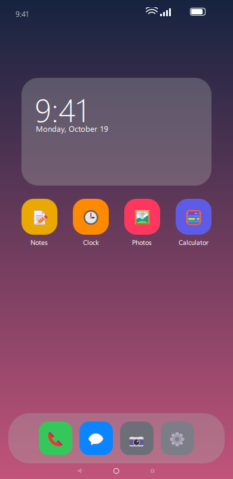
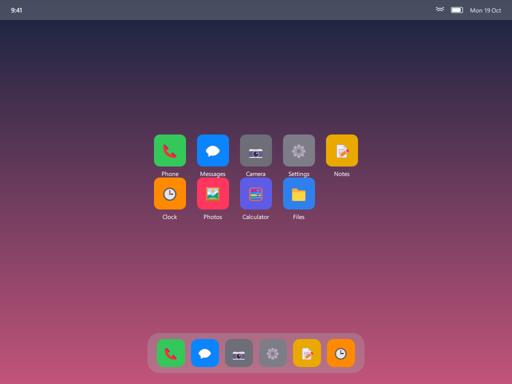
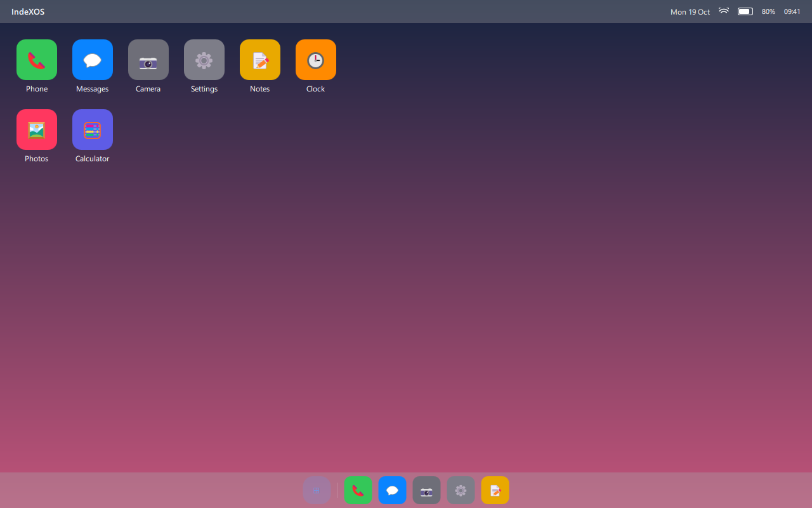

Phone
Lock screen, launcher, dock, notification shade and app windows.
IndeXOS is a Linux-based phone OS. One .hui file describes the lock screen, launcher, dock and settings — and the same device draws itself as a phone, a desktop or a tablet when a dock is attached.



The shell running on a PC · same theme, three surfaces
Why
Most phone interfaces are fixed. You can change the wallpaper and the icon pack, and the rest is decided for you. IndeXOS starts from the opposite place: the system is described, not hard-coded.
A .hui theme carries every value the shell needs — colours, glass, corner radii, the status bar and clock, the app grid, the dock, navigation, the notification shade, the app switcher, settings layout and animation curves. Change the file, restart, and the whole interface is different.
Because the shell draws from data, the same theme can also describe a desktop and a tablet. The hardware decides which one you get; the theme decides how it looks.
.huimanifest.json — magic, format version, and a SHA-256 for every file in the archive.
profile.json — the interface itself: element sets for the phone, plus separate sets for the desktop and tablet surfaces.
assets/ — wallpapers, icons and fonts the theme refers to.
Three surfaces
The phone is one surface. Attach a dock and it becomes a desktop; attach the fold-out shell and it becomes a tablet. Each surface inherits the theme and can override the parts that matter.
Lock screen, launcher, dock, notification shade and app windows.

Top bar, taskbar, window frames and a start menu, drawn when a dock is attached.
Status bar, dock, app grid and split view for the larger shell.
Status
Pre-alpha, and honest about it: the software has real, tested parts, and the phone it is meant for does not exist yet.
Every value is validated and clamped. A corrupt or hostile file is refused, and a theme that fails to load rolls back to the previous one.
The format defines separate element sets for the desktop and tablet shells, so a theme can style all three modes without code.
A Windows app that renders the phone, desktop and tablet shells live while you edit, then saves the result as a .hui.
A Qt/QML shell loads an installed theme and draws the surface. Icons open windows, the desktop start menu works, and the surface switches at runtime.
On Linux the shell reads USB devices and displays, recognises a dock, and records which surface to draw.
The format and loader have a Python suite; the shell has click tests that drive real icons, menus and windows.
Not built yet: the bootable OS image, the Windows and Android app runtimes, third-party app theming, the Workshop and community store, and all of the hardware. That is why there is nothing to install on a phone today.
Hardware direction
Concept work, drawn but not built. The phone is meant to be the computer, and the accessories are what change its shape.
Rear glass intended for active thermal dissipation and a distinct visual identity.
Active cooling with heatsink and fans, plus two USB-C, two USB-A, HDMI, DisplayPort and Ethernet for desktop work.
A portable shell with a larger screen, its own battery and a headphone jack.
Display output for a large screen, with multi-window scaling.
Concept only. No hardware has been manufactured. Enclosures, thermal glass and boards come after the software runs on a device.
Occasional updates when there is something real to show. No release date, because there isn't one worth guessing at.